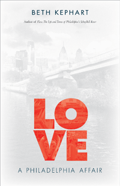

<HTML>
<head>
<meta name='robots' content='noindex,nofollow' /><script> (function(i,s,o,g,r,a,m){i['GoogleAnalyticsObject']=r;i[r]=i[r]||function(){  (i[r].q=i[r].q||[]).push(arguments)},i[r].l=1*new Date();a=s.createElement(o),  m=s.getElementsByTagName(o)[0];a.async=1;a.src=g;m.parentNode.insertBefore(a,m)   })(window,document,'script','//www.google-analytics.com/analytics.js','ga');   ga('create', 'UA-43183130-1', 'temple.edu');   ga('send', 'pageview'); </script>
<title>Beth Kephart: Love - Print</TITLE>
<link rel="stylesheet" href="general.css" type="text/css"><SCRIPT LANGUAGE = JAVASCRIPT></SCRIPT></HEAD>
<BODY LINK="#3152A5" VLINK="#3152A5" ALINK=Gray BGCOLOR=White>
<CENTER><P CLASS=intro><br>From the best-selling author of <i>Flow</i> comes a love letter to the Philadelphia region, its places, and its people<br><br></P></CENTER><br>&nbsp;
<!--none//--><Table width="100%" border=0 cellspacing=5><tr><td width="175" align="center"></td><td>

<h1 class="booktitle">Love</h1>
<h1 CLASS=subtitle>A Philadelphia Affair</h1>
<h3 class="author">Beth Kephart</h3>
<p class="info">paper EAN: 978-1-4399-1316-1 (ISBN:1-4399-1316-1)</br>$14.95, Oct 17, <font color=#990033>Available</font><br>
<P class="info">cloth EAN: 978-1-43991-315-4 (ISBN: 1-4399-1315-3) <br>$24.50, Aug 15, <FONT COLOR=#990033>Available</FONT>

<br>Electronic Book EAN: 978-1-43991-317-8 (ISBN: 1-4399-1317-X) <br>$24.50 <FONT COLOR=#990033>Available</FONT>

<br> 176 pp

 5.5 x 8.5

 39&nbsp;halftones 

</P></td></tr></table><BR><BLOCKQUOTE><P><I>"Once again Beth Kephart enlightens her readers about her love affair with Philadelphia in her new book, </i>Love<i>. She explores the everyday and historical aspects of the City of Brotherly Love and brings them to life. Simplistic, beautifully chosen words engage the reader, painting a picture of the ordinary and making it extraordinary�and truly authentic. Well done and well worth the read."</i> <br>&#151<b>Jack Ferguson</b>, President and CEO, Philadelphia Convention and Visitors Bureau</I></P></BLOCKQUOTE>
<P><P>Philadelphia has been at the heart of many books by award-winning author Beth Kephart, but none more so than the affectionate collection <i>Love</i>. This volume of personal essays and photographs celebrates the intersection of memory and place. Kephart writes lovingly, reflectively about what Philadelphia means to her. She muses about meandering on SEPTA trains, spending hours among the armor in the Philadelphia Museum of Art, and taking shelter at Independence Mall during a downpour.

<P>In <i>Love</i>, Kephart returns to Reading Terminal Market at Thanksgiving: �This abundant, bristling market is, in November, the most unlonesome place around.� She ponders the artists of Old City. She studies the geometry of streets and considers the history of sidewalks.

<P>Kephart also extends her journeys to the suburbs�Glenside, Bryn Mawr, and Ardmore�and beyond, to Lancaster County, Pennsylvania; Stone Harbor, New Jersey; and Wilmington, Delaware. What emerges is a valentine to the City of Brotherly Love and its environs. In <i>Love</i>, Philadelphia is �more than its icons, bigger than its tagline.�</p>
<BR><H2 class="inpageheading">Excerpt</h2><P>Excerpt available at <a href="http://www.temple.edu/tempress">www.temple.edu/tempress</a></p>

<BR><H2 class="inpageheading">Reviews</h2><p>
<p><i>"</i>Love<i> is a lovely literary tour of places and spaces in and around Philadelphia. Kephart does a wonderful job of drawing you into her emotional connections to neighborhoods, to transportation routes, to some of the truly fascinating and iconic buildings around this ever-changing city, and to places that draw you outside Philadelphia�but not so far that you cannot return quickly. Her lyrical prose instantly unites you with streets you�ve walked down before�but now with a bit more attention to details than you ever considered before. Seen through Kephart�s eyes and words, Philadelphia </i>is<i> a place of new beginnings."</i> <br>&#151<b>Siobhan A. Reardon</b>, President and Director, Free Library of Philadelphia

<p>"In her new book </i>Love<i>, Beth Kephart beautifully captures the heart and soul of our city. She captures its complexity by writing eloquently about its beauty, the respect for the past, the resilience of its citizens, and an embrace of creativity and innovation unfolding at the speed of light. Setting an extraordinary backdrop of some of our city�s and region�s most beloved sites, Kephart paints a picture of an area where the past, present, and future come together to create a unique and wonderful place that is exciting for those of us who live here and a great treat for those who travel here from across the country and the globe."</i> <br>&#151<b>Jane Golden</b>, Executive Director, City of Philadelphia Mural Arts Program

<p><i>"This aptly named collection based on </i>Philadelphia Inquirer<i> columns is a resident�s love song to the city and its suburbs. Kephart has written on the region before in </i>Flow<i>, her wonderful book on Philadelphia�s iconic Schuylkill River. Here she waxes poetic about some of the city�s famous landmarks, such as Reading Terminal Market and 30th Street Station. The author also conjures up the less-well-known Woodlands Cemetery and the suburb of Glenside. She particularizes places on specific dates with specific sunlight... It is an evocation of what Philadelphia is like through the pen of a gifted writer. So the native will find memories stirred and the tourist will be stimulated to visit... Kephart has written in many genres, from young adult fiction to poetry; here she adds another excellent nonfiction book for the general reader."</i> <br>&#151<b><i>Library Journal </i></b>
</p><BR><H2 class="inpageheading">Contents</h2><p>
<p>Preface

<p><b>I: MEANDERINGS</b>
<br>Treasure Hunt: Guyer Avenue, Southwest Philadelphia
<br>Time In, Time Out: Riding the SEPTA Rails
<br>The Ghosts of Bush Hill: Fairmount
<br>Them, Then; Us, Now: Woodlands Cemetery
<br>Into the Woods: Wissahickon Creek 
<br>Art Central: Old City
<br>River Redemption: Schuylkill River
<br>Where Gossip Begins: Memorial Hall
<br><i>psychylustro</i>: The Northeast Corridor
<br>City Sidewalks
<br>Room for a View: City Hall Tower
<br>The Students Stay Young; the Teacher Grows Old: Locust Walk, University of Pennsylvania
<br>Wrecking Ball: South Philadelphia Sports Complex
<br>In Between: Street by Street

<p><b>II: INTERIOR SPACES</b>
<br>Body Language: North Broad Street, Louise Reed Center for Dance
<br>So Many Doors, So Many Windows: Wayne Art Center 
<br>Of Feathers and Fur: The Martha Street Hatchatory, East Kensington
<br>Where Literature Lives: Free Library of Philadelphia, Central Branch
<br>The Artist and the Foundrymen: Port Richmond
<br>All in the House: Reading Terminal Market at Thanksgiving 
<br>Things Are Disappearing Here: Fairmount Water Works
<br>Essential Dualities: Philadelphia Museum of Art
<br>Past, Present, Future: 30th Street Station

<p><b>III: FRINGE WORK</b>
<br>Double Dipping: Stone Harbor, New Jersey
<br>Family for the Day: Lancaster County
<br>Lost and Found: Glenside
<br>River Road: New Hope and the Delaware River
<br>Garden Retreat in the High Heat of Summer: Chanticleer Garden
<br>On a Wing and a Prayer: Hawk Mountain
<br>Heart on the Horses: The Devon Horse Show and Country Fair
<br>I Thought I Could Dance: Ardmore
<br>Accidental Tourists: Wilmington, Delaware
<br>Skytop Lodge: The Poconos
<br>After the Storm: Beach Haven, New Jersey, Pre-season
<br>Earthly Ambitions: Bryn Mawr Farmers� Market
<br>Notes on Her Memory: Washington Memorial Chapel at Valley Forge National Historical Park
<br>The Lights Fantastic: Montgomery and Delaware Counties, Tredyffrin and Willistown Townships
<br>Home

<p>Credits and Acknowledgments
</P><BR>&nbsp;<BR><H2 class="inpageheading">About the Author(s)</H2><p>
<P><b>Beth Kephart</b> is the award-winning author of twenty-one books, including <i>This Is the Story of You</i>, <i>Handling the Truth: On the Writing of Memoir</i>, 
		<i>Flow: The Life and Times of Philadelphia�s Schuylkill River</i>, and <i>Small Damages</i>. She has been nominated for a National Book Award, has been awarded grants from the National Endowment for the Arts and the Pew Fellowships in the Arts, and has won the national Speakeasy Poetry Prize. Kephart writes a monthly column on the intersection of memory, place, and idea for the <i>Philadelphia Inquirer </i>and is a frequent contributor to the <i> Chicago Tribune </i>. She teaches memoir at the University of Pennsylvania and is a co-founder of Juncture Workshops, www.junctureworkshops.com.<br></P></P>
</p>
<BR><H2 class="inpageheading">Subject Categories</H2>
<p><A HREF="/tempress/philly.html" TARGET="_top">Philadelphia Region</a>
<BR><A HREF="/tempress/general.html" TARGET="_top">General Interest</a>
<BR><A HREF="/tempress/urban.html" TARGET="_top">Urban Studies</a>
</p>
<P>&nbsp;</P><font face="Arial" size="1"><a href="copyright.html" OnMouseOver="window.status='Web Copyright Policy';return true;" OnMouseOut="window.status=''" TITLE="Web Copyright Policy">&copy;</a> 2015 <a href="http://www.temple.edu" target="new" OnMouseOver="window.status='Link to Temple University home page';return true;" OnMouseOut="window.status=''" TITLE="Link to Temple University home page">Temple University</a>. All Rights Reserved. This page: <a href="http://www.temple.edu/tempress/titles/2386_reg.html"OnMouseOver="window.status='Link to the book page';return true;" OnMouseOut="window.status=''" TITLE="Link to the book page">http://www.temple.edu/tempress/titles/2386_reg.html.</a></font></BODY></HTML>
                    